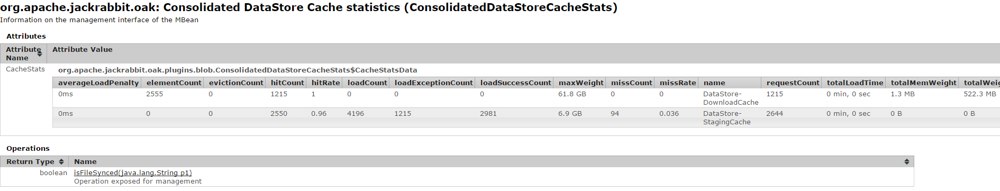

The Oak BlobStore is similar to the Jackrabbit 2.x DataStore. However, there are a few minor problems the BlobStore tries to address. Because, for the Jackrabbit DataStore:
a temporary file is created when adding a large binary, even if the binary already exists
sharding is slow and complicated because the hash needs to be calculated first, before the binary is stored in the target shard (the FileDataStore still doesn’t support sharding the directory currently)
file handles are kept open until the consumer is done reading, which complicates the code, and we could potentially get “too many open files” when the consumer doesn’t close the stream
for database based data stores, there is a similar (even worse) problem that streams are kept open, which means we need to use connection pooling, and if the user doesn’t close the stream we could run out of connections
for database based data stores, for some databases (MySQL), binaries are fully read in memory, which results in out-of-memory
binaries that are similar are always stored separately no matter what
Those problems are solved in Oak BlobStores, because binaries are split into blocks of 2 MB. This is similar to how DropBox works internally. Blocks are processed in memory so that temp files are never needed, and blocks are cached. File handles don’t need to be kept open. Sharding is trivial because each block is processed separately.
Binaries that are similar: in the BlobStore, currently, they are stored separately except if some of the 2 MB blocks match. However, the algorithm in the BlobStore would allow to re-use all matching parts, because in the BlobStore, concatenating blob ids means concatenating the data.
Another change was that most DataStore implementations use SHA-1, while the BlobStore uses SHA-256. Using SHA-256 will be a requirement at some point, see also http://en.wikipedia.org/wiki/SHA-2 “Federal agencies … must use the SHA-2 family of hash functions for these applications after 2010”. This might affect some potential users.
Jackrabbit 2 used DataStore to store blobs. Oak supports usage of such DataStore via DataStoreBlobStore wrapper. This allows usage of FileDataStore and S3DataStore with Oak NodeStore implementations.
Currently Oak provides two NodeStore implementations i.e. SegmentNodeStore and DocumentNodeStore. Further Oak ships with multiple BlobStore implementations
In addition there are some more implementations which are considered experimental
Depending on NodeStore type and usage requirement these can be configured to use a particular BlobStore implementation. For OSGi env refer to Configuring DataStore/BlobStore
By default SegmentNodeStore (aka TarMK) does not require a BlobStore. Instead the binary content is directly stored as part of segment blob itself. Depending on requirements one of the following can be used
By default DocumentNodeStore when running on Mongo uses MongoBlobStore. Depending on requirements one of the following can be used
The DataStore implementations S3DataStore,CachingFileDataStore and AzureDataStore support local file system caching for the files/blobs and extend the AbstractSharedCachingDataStore class which implements the caching functionality. The CachingFileDataStore is useful when the DataStore is on nfs. The cache has a size limit and is configured by the cacheSize parameter.
The local cache will be checked for existence of the record corresponding to the requested file/blob before accessing it from the DataStore. When the cache exceeds the limit configured while adding a file into the cache then some of the file(s) will be evicted to reclaim space.
The cache also supports asynchronous uploads to the DataStore. The files are staged locally in the cache on the file system and an asynchronous job started to upload the file. The number of asynchronous uploads are limited by the size of staging cache configured by the stagingSplitPercentage parameter and is by default set to 10. This defines the ratio of the cacheSize to be dedicated for the staging cache. The percentage of cache available for downloads is calculated as (100 - stagingSplitPerentage) * cacheSize (by default 90). The asynchronous uploads are also multi-threaded and is governed by the uploadThreads configuration parameter. The default value is 10.
The files are moved to the main download cache after the uploads are complete. When the staging cache exceeds the limit, the files are uploaded synchronously to the DataStore until the previous asynchronous uploads are complete and space available in the staging cache. The uploaded files are removed from the staging area by a periodic job whose interval is configured by the stagingPurgeInterval configuration parameter. The default value is 300 seconds.
Any failed uploads (due to various reasons e.g. network disruption) are put on a retry queue and retried periodically with the configured interval stagingRetryInterval. The default value for is 600 seconds.
The ConsolidatedDataStoreCacheStats is registered as an MBean and provides a snapshot of the cache performance for both the download and the upload staging cache.

The following table explains the different statistics exposed for both type of caches
| Parameters | DataStore-DownloadCache | DataStore-StagingCache |
|---|---|---|
| elementCount | Number of files cached | Pending file uploads in cache |
| requestCount | Number of files requested from cache | Number of file uploads requested |
| hitCount | Number of files served from cache | Number of files uploaded asynchronously |
| hitRate | Ratio of hits to requests | Ratio of hits to requests |
| loadCount | Number of files loaded when not in cache | Number of file requests from cache |
| loadSuccessCount | Number of files successfully loaded | Number of file requests served from cache |
| loadExceptionCount | Number of load file unsuccessful | Number of file requests not in cache |
| maxWeight | Max cache size (bytes) | Max cache size (bytes) |
| totalWeight | Current size of cache (bytes | Current size of cache (bytes)bytes |
| totalMemWeight | Approximate size of cache in-memory (bytes) | Approximate size of cache in memory (bytes) |
The parameters above can be used to size the cache. For example:
The MBean also exposes a method isFileSynced which takes a node path of a binary and returns whether the associated file/blob has been uploaded to the DataStore.
When upgrading from the older cache implementation the process should be seamless and any pending uploads would be scheduled for upload and any previously downloaded files in the cache will be put in the cache on initialization. There is a slight difference in the structure of the local file system cache directory. Whereas in the older cache structure both the downloaded and the upload files were put directly under the cache path. The newer structure segregates the downloads and uploads and stores them under cache path under the directories download and upload
respectively.
There is also an option to upgrade the cache offline by using the datastorecacheupgrade command of oak-run. The details on how to execute the command and the different parameters can be checked in the readme for the oak-run module.
Blob Garbage Collection(GC) is applicable for the following blob stores:
DocumentNodeStore
SegmentNodeStore
Oak implements a Mark and Sweep based Garbage Collection logic.
The garbage collection can be triggered by calling:
For the FileDataStore, S3DataStore and AzureDataStore the blob ids are cached locally on the disk when they are created which speeds up the ‘Mark BlobStore’ phase. The locally tracked ids are synchronized with the data store periodically to enable other cluster nodes or different repositories sharing the datastore to get a consolidated list of all blob ids. The interval of synchronization is defined by the OSGi configuration parameter blobTrackSnapshotIntervalInSecs for the configured NodeStore services.
If 2 garbage collection cycles are executed within the blobTrackSnapshotIntervalInSecs then there may be warnings in the logs of some missing blob ids which is due to the fact that the deletions due to earlier gc has not been synchronized with the data store. It’s ok to either ignore these warnings or to adjust the blobTrackSnapshotIntervalInSecs parameter according to the schedule identified for running blob gc.
When upgrading an existing system to take advantage of caching the existing blob ids have to be cached. One of the following should be executed.
On start of a repository configured to use a shared DataStore (same path, S3 bucket or Azure container), a unique repository id is generated and registered in the NodeStore as well as the DataStore. In the DataStore this repository id is registered as an empty file with the format repository-[repository-id] (e.g. repository-988373a0-3efb-451e-ab4c-f7e794189273). This empty file is created under:
On start/configuration of all the repositories sharing the data store it should be confirmed that the unique repositoryId per repository is registered in the DataStore. Refer the section below on Checking Shared GC status.
The high-level process for garbage collection is still the same as described above. But to support blob garbage collection in a shared DataStore the Mark and Sweep phase can be run independently.
The details of the process are as follows:
The shared DataStore garbage collection is applicable for the following DataStore(s):
The status of the GC operations on all the repositories connected to the DataStore can be checked by calling:
This operation can also be used to ascertain when the ‘Mark’ phase has executed successfully on all the repositories, as part of the steps to automate GC in the Shared DataStore configuration. It should be a sufficient condition to check that the references file is available on all repositories. If the server running Oak has remote JMX connection enabled the following code example can be used to connect remotely and check if the mark phase has concluded on all repository instances.
import java.util.Hashtable;
import javax.management.openmbean.TabularData;
import javax.management.MBeanServerConnection;
import javax.management.MBeanServerInvocationHandler;
import javax.management.ObjectName;
import javax.management.remote.JMXConnectorFactory;
import javax.management.remote.JMXServiceURL;
import javax.management.openmbean.CompositeData;
/**
* Checks the status of the mark operation on all instances sharing the DataStore.
*/
public class GetGCStats {
public static void main(String[] args) throws Exception {
String userid = "<user>";
String password = "<password>";
String serverUrl = "service:jmx:rmi:///jndi/rmi://<host:port>/jmxrmi";
String OBJECT_NAME = "org.apache.jackrabbit.oak:name=Document node store blob garbage collection,type=BlobGarbageCollection";
String[] buffer = new String[] {userid, password};
Hashtable<String, String[]> attributes = new Hashtable<String, String[]>();
attributes.put("jmx.remote.credentials", buffer);
MBeanServerConnection server = JMXConnectorFactory
.connect(new JMXServiceURL(serverUrl), attributes).getMBeanServerConnection();
ObjectName name = new ObjectName(OBJECT_NAME);
BlobGCMBean gcBean = MBeanServerInvocationHandler
.newProxyInstance(server, name, BlobGCMBean.class, false);
boolean markDone = checkMarkDone("GlobalMarkStats", gcBean.getGlobalMarkStats());
System.out.println("Mark done on all instances - " + markDone);
}
public static boolean checkMarkDone(String operation, TabularData data) {
System.out.println("-----Operation " + operation + "--------------");
boolean markDoneOnOthers = true;
try {
System.out.println("Number of instances " + data.size());
for (Object o : data.values()) {
CompositeData row = (CompositeData) o;
String repositoryId = row.get("repositoryId").toString();
System.out.println("Repository " + repositoryId);
if ((!row.containsKey("markEndTime")
|| row.get("markEndTime") == null
|| row.get("markEndTime").toString().length() == 0)) {
markDoneOnOthers = false;
System.out.println("Mark not done on repository : " + repositoryId);
}
}
} catch (Exception e) {
System.out.println(
"-----Error during operation " + operation + "--------------" + e.getMessage());
}
System.out.println("-----Completed " + operation + "--------------");
return markDoneOnOthers;
}
}
If a repository no longer shares the DataStore then it needs to be unregistered from the shared DataStore by following the steps:
The data store consistency check will report any data store binaries that are missing but are still referenced. The consistency check can be triggered by:
After the consistency check is complete, a message will show the number of binaries reported as missing. If the number is greater than 0, check the logs configured for org.apache.jackrabbit.oak.plugins.blob .MarkSweepGarbageCollector for more details on the missing binaries.
Below is an example of how the missing binaries are reported in the logs:
11:32:39.673 INFO [main] MarkSweepGarbageCollector.java:600 Consistency check found 1 missing blobs 11:32:39.673 WARN [main] MarkSweepGarbageCollector.java:602 Consistency check failure in the the blob store : DataStore backed BlobStore [org.apache.jackrabbit.oak.plugins.blob.datastore.OakFileDataStore], check missing candidates in file /tmp/gcworkdir-1467352959243/gccand-1467352959243